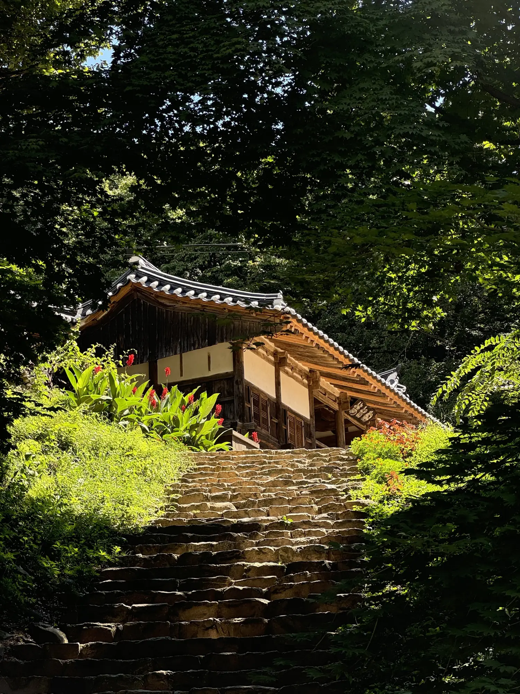
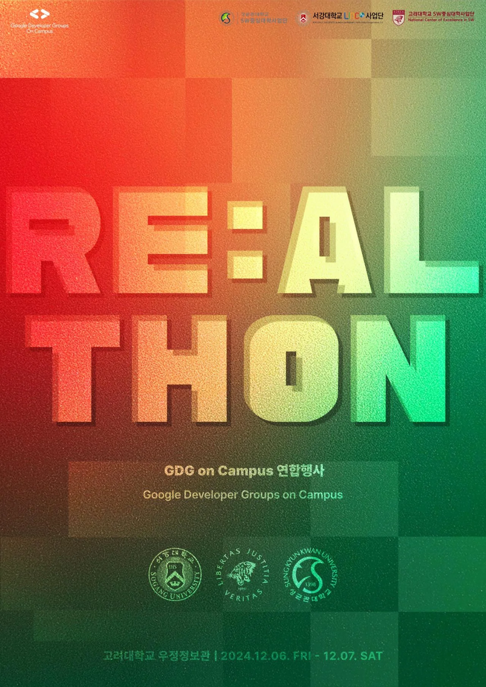
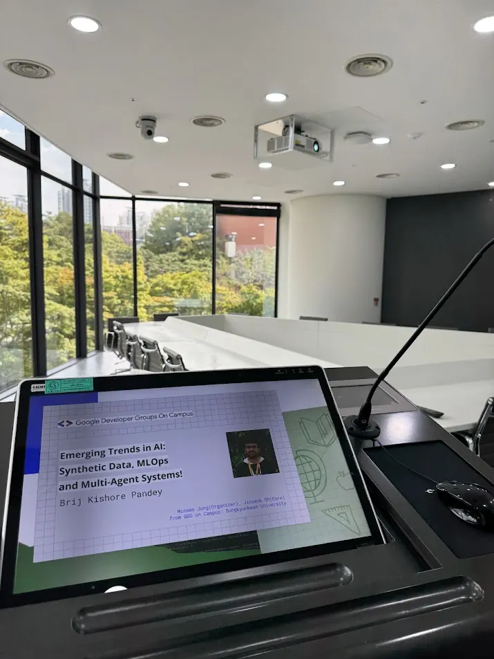
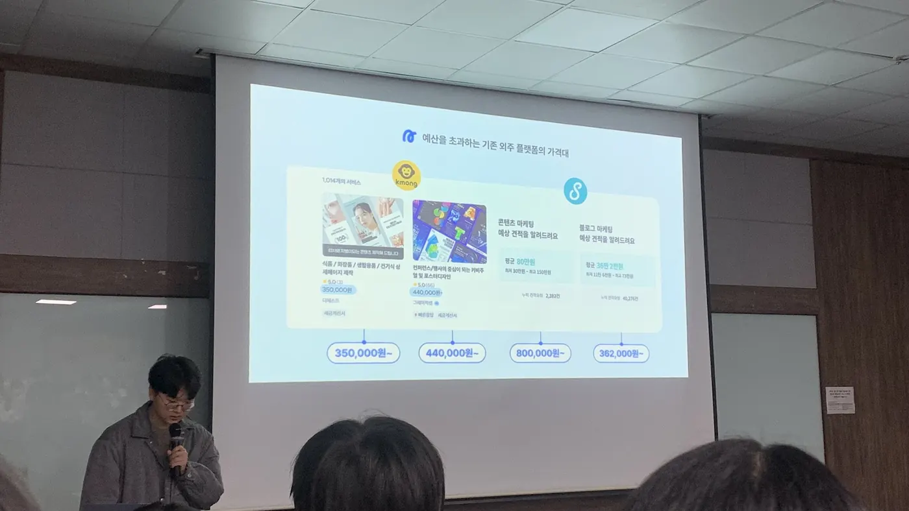
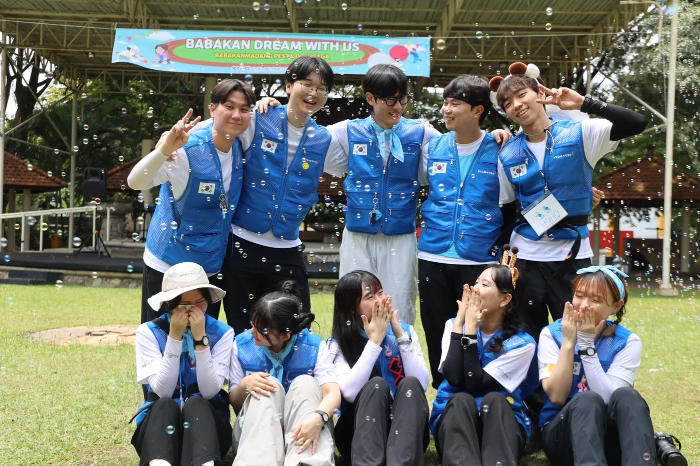

012024
Explore
AI와 데이터, 서비스 기획, 교육, 글로벌 활동까지 관심 가는 영역을 직접 경험했습니다.
Jinseok Oh

한 칸씩 올라온 계단처럼, 탐색하고 발견하고 적응하며 다음 단계로 연결해 왔습니다.
AI와 데이터, 서비스 기획, 교육, 글로벌 활동까지 관심 가는 영역을 직접 경험했습니다.
기술 그 자체보다 기술이 사람과 산업을 만나는 곳에 제 관심이 있다는 것을 발견했습니다.
군 복무 중에도 SQLD, IELTS 8.0, 무역영어 1급, 한국사 1급, ADsP를 취득하며 성장을 이어갔습니다.
육군 통신병 · 분대장기술을 실제 필요와 연결하고, 사람과 아이디어, 산업을 이어 의미 있는 가치를 만들고 싶습니다.
대한민국 육군 통신병 · 분대장으로 복무하며, 새로운 환경에서도 배움과 자기계발을 이어가고 있습니다.

글로벌 협업이 무산되자 방향을 바꿔 성균관대 · 고려대 · 서강대 3개 대학 공동 AI 해커톤(50명 · 9개 팀)을 기획하고 개최.
Read more →
네트워크 없이 여러 경로로 월간 IT 세미나 연사를 섭외하고, 섭외 과정을 한 · 영 양식으로 문서화.
Read more →
AI 홍보 전략 플랫폼 2GATHER를 PM으로 기획, 5주 만에 서비스 배포.
Read more →
인도네시아 보고르 지역 초등학교에서 177시간 동안 교육 · 환경 개선 봉사.
Read more →